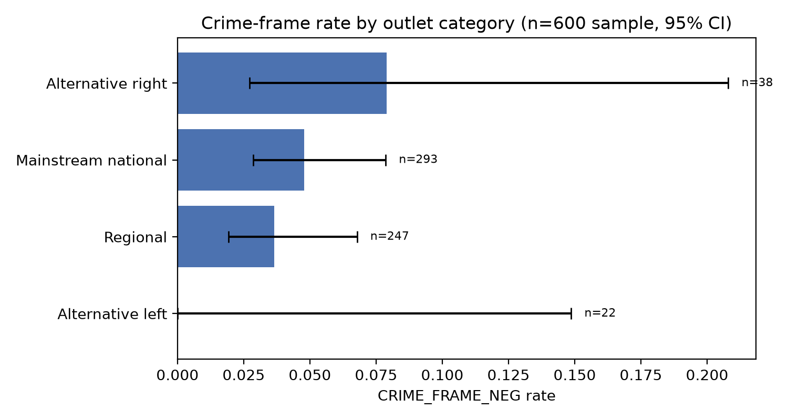

The research question
Can large language models, guided by refined natural-language annotation instructions, reliably identify group-related crime framing in German news, and how do they compare with human coders?
The corpus has 659,895 paragraphs from 60 German outlets published in 2022 that mention
one of 78 national, ethnic or religious groups. During coding, the group was masked as
[Gruppe 1] or [Andere Gruppe] to reduce coder bias. About half
of the paragraphs come from national mainstream media (50.6%), 39.4% from regional media,
and 10% from fringe outlets. The most mentioned groups are refugees (117,132 paragraphs),
Ukrainians (72,028) and Russians (70,398).
The approach
We implemented the seminar's annotation-validation routine in Python, in four stages:
-
Draft instruction. A written coding rule for
NO_CRIME_FRAMEvs.CRIME_FRAME_NEG. A third label, positive crime framing, appeared only once in the development data, so we left it out of the evaluation. - Hard cases. Ten repeated LLM runs at temperature 0.7 to find paragraphs where the instruction was still ambiguous.
- Validation. Zero-shot, few-shot and few-shot with chain-of-thought on development samples, plus side experiments with model ensembles and confidence-based routing.
- Final test. A new random sample of 600 paragraphs that was not used during development.
The final setup runs ministral-3-14b zero-shot ten times and takes the
majority vote. Llama-3.3-70B and Qwen3.5-27B were only used in the ensemble experiment.
Results
The raw agreement looks higher than it is, because only 26 of the 600 paragraphs contain a negative crime frame. A model that always answered "no frame" would already be right 95.7% of the time, which is why κ and macro-F1 are the numbers to look at.
Getting there took several rounds. Macro-F1 went from 0.563 (zero-shot, first batch) to 0.712 (few-shot), then down to 0.574 with chain-of-thought, then up to 0.849 after we rewrote the instructions, and finally 0.920 on the held-out sample.
The LLM's κ is measured against the resolved consensus label. The human α measures two coders agreeing with each other before any discussion. Matching a cleaned consensus label is an easier target, and the LLM's answer is already a majority vote over ten runs. So the two numbers are not directly comparable, and we do not claim the model is better than the human coders.


Two side experiments did not work out. Adding two larger models as an ensemble raised macro-F1 from 0.615 to 0.684 on the development set, too little for the extra compute. Confidence-based routing failed because the small model's confidence scores did not separate right from wrong answers, so almost every paragraph was sent to the larger model. Alternative-right outlets had the highest rate of negative crime frames (7.9%, against 3.6 to 4.8% elsewhere), but with 600 paragraphs the confidence intervals overlap, so we report this only as descriptive.
Limitations
With only 26 negative crime frames in the final sample, the estimates for that class are uncertain. Positive crime framing was too rare to validate at all.